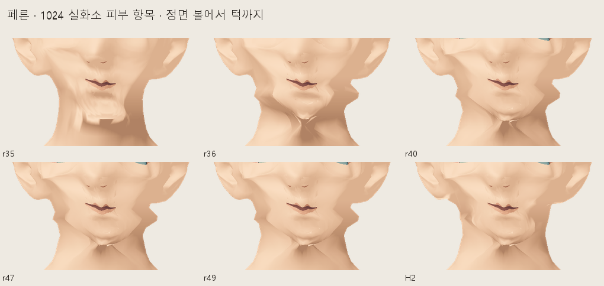
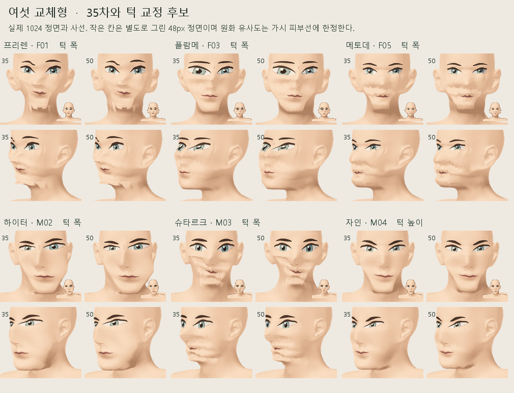
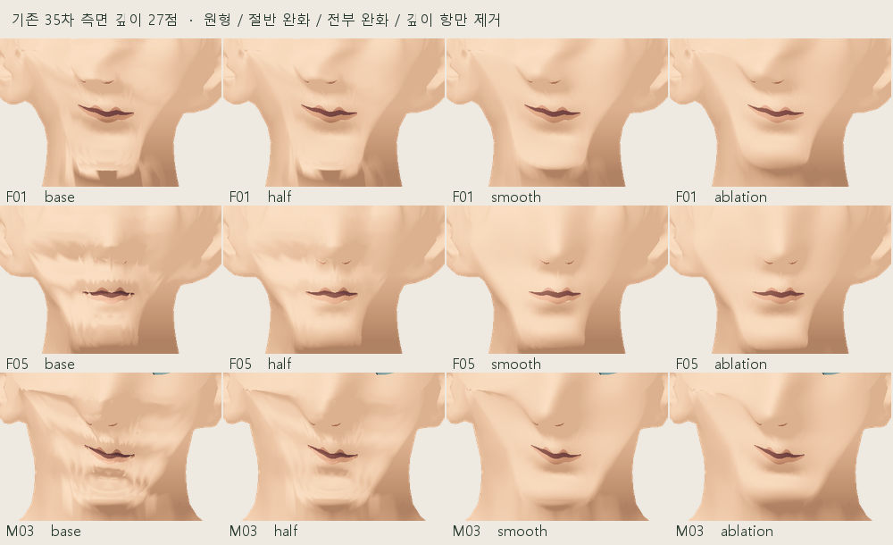
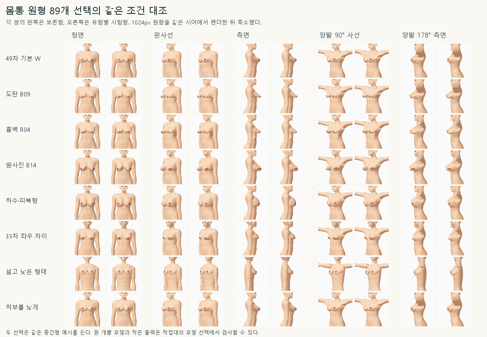

모델을 골라 직접 확인
모델 탭에서 여성·남성 얼굴을 그림으로 고르거나 가슴 유형을 검색할 수 있습니다. 같은 구도의 두 형상을 비교하려면 보기 탭에서 한 창의 형상을 고정하고, 다른 창을 선택해 ‘다른 창도 같은 방향’을 누른 뒤 모델을 바꾸세요. 부위 탭에서 보존 원형과 교정 시험을 교대할 수 있습니다.
페른의 정면 볼이 꺾인 지점
정면 1024px에서 턱을 향하던 볼의 외곽선이 다시 벌어지는 최대 깊이를 측정했습니다. 35차에서 좌우 4·4px였던 값이 36차에서 6·22px가 되었고 40·47·49차에 그대로 남았습니다. 50차 연구형은 턱 옆 피부 276점의 폭을 조정해 4·2px로 줄였습니다. 측면과 얼굴 중심 깊이를 유지했고 새로 뒤집힌 삼각형은 없었습니다. 별도 19화 구도는 개선됐지만 2화 2번의 턱선 오차는 4.012에서 4.273px로 늘었습니다.

기존 두 얼굴과 교체할 여섯 얼굴
여성은 페른에 프리렌·플람메·메토데를, 남성은 힘멜에 하이터·슈타르크·자인을 추가했습니다. 각 인물의 공식 설정화로부터 얻은 눈·입 표식과 측면선을 사용했습니다. 머리카락·수염·안경으로 가려진 피부와 보이지 않는 후두부는 원화 일치로 판정할 수 없습니다.
| 얼굴 | 같은 카메라로 확인한 결과 |
|---|---|
| 플람메·메토데 | 정면과 두 사선의 볼·턱 피부선 오차가 줄고 측면은 동률입니다. 메토데의 입·코 주변 명암 주름은 남습니다. |
| 프리렌·하이터 | 범용 턱 폭 조절이 일부 사선에서 원본과 더 멀어져 보존 원형을 먼저 표시합니다. |
| 슈타르크 | 턱 높이를 바꾼 정면은 개선됐지만 측면의 오차는 4.507에서 8.514px로 늘었습니다. 보류한 안도 부위 탭에서 비교할 수 있습니다. |
| 자인 | 턱 높이 시험에서 정면과 양쪽 측면이 개선됐습니다. 눈을 감은 사선은 같은 카메라로 등록하기 어려워 평가에서 제외했습니다. |

코와 입 사이의 톱니
위 도판의 메토데와 슈타르크에서 가로줄처럼 꺾인 피부는 35차부터 있었습니다. 측면에서 표본을 뜬 27개 높이의 깊이를 부드럽게 연결한 다음 정면에서 움직인 표점이 없는지 확인했습니다. 두 얼굴의 깊이 이차차분 평균은 각각 44.8%와 40.3% 줄었습니다. 측면 코~턱 오차는 메토데에서 1.614 → 1.472px, 슈타르크에서 3.142 → 3.337px였습니다. 두 얼굴을 열면 이 깊이선 시험부터 볼 수 있습니다. 교정 전 원형과 턱 폭 시험도 보존했습니다.



가슴 89개 선택과 자세 검토
49차 기본 W, 도판 21형, 흉벽 재검토 21형, 실물 사진 대조 20형, 34차 분포 8형, 33차 분포 6형, 해부 관찰 10개, 정밀 조형 2개를 모두 같은 작업대에 연결했습니다. 중립 몸통 피부는 88개가 서로 다릅니다. 해부 관찰 ‘기본값’과 ‘중간형’은 같은 원형을 가리킵니다. 같은 이름의 B09라도 서로 다른 제작 방법으로 만든 세 갈래의 원형이 있어 각각 보존했습니다.
W는 사선 B3의 하부 명암 오차가 7.70에서 6.70px, 측면 S3의 안쪽 명암이 1.79에서 1.68px로 줄었습니다. A5에서는 1.26에서 2.31px로 커졌습니다. 팔 90도에서 겨드랑이 표면이 꺾이는 정도의 상위 5% 경계가 71.07도에서 66.33도로 줄었지만 화면에 그려진 음영 기울기는 커졌습니다. 부위 탭에서 소스와 후보를 직접 바꾸고, 관절 탭에서 양팔 각도를 조정해 하부와 옆가슴을 함께 보세요.
W 외 88개 중 79개의 중립 하부를 유형별로 교정했고 36개의 자세 변형 강도를 바꿨습니다. 89개 중 79개에서 피부 표식을 곡면에 다시 밀착했습니다. 나머지 10개에서는 원래 결합을 유지합니다. 정면에서 피부가 표식을 가렸던 화소의 합은 15,112에서 472, 팔 90도의 반대 사선은 11,013에서 568로 줄었습니다. 이 수치는 표식이 피부 안에 들어간 문제를 재며 몸매의 선호도를 채점하지 않습니다. 모든 모델은 최신 시험 상태로 열리며 부위 탭에서 보존 원형과 교정 시험을 바꿀 수 있습니다.

관찰창의 배치와 조작
형태 작업대의 1·2·4창은 동일한 메시를 여러 카메라에서 렌더합니다. 그림 사이의 경계를 끌어 너비와 높이를 조절하고 한 칸을 두 번 누르면 크게 본 뒤 복귀할 수 있습니다. 통합 실험실 바깥쪽의 도구 창 배치는 정밀 조형·바스트 모핑·내 참고그림·환경처럼 서로 다른 작업 도구를 나란히 열 때 씁니다. 두 배치 모두 원래 작업 상태를 보존합니다.
Blender·Maya·Krita 원전별 요약, 상세 설계와 검증 · 내 참고그림 엔진 · 실험실 학습 기록